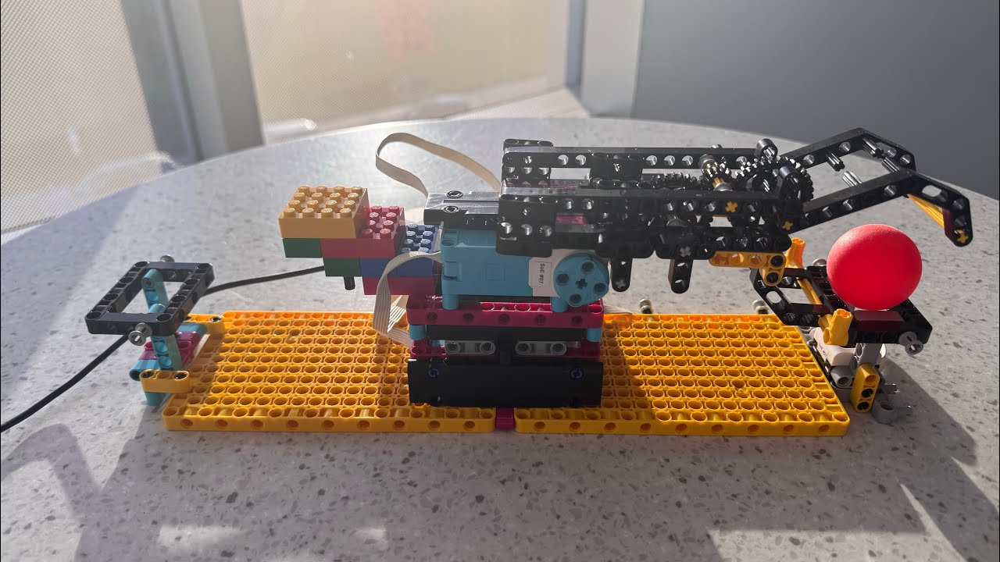

For this project I built and programmed a LEGO SPIKE Prime robotic arm that picks up a ping pong ball, moves it, and places it on another base. The arm has to start away from the start and end locations. Placing a ball on the Color Sensor at the start base triggers it to retrieve the ball, carry it to the end base, set it down, and return to its starting position to wait for the next ball. The challenge was to think like an engineer (how stable and repeatable is the device?) and like a coder (what sequence of events needs to happen, and how precise are the movements?). The bases connect end to end, so for the in-class demonstration every team's arm was combined into one line to try to pass a single ball from the first team to the last.
My arm sits on a swivel in the middle of the board. A motor on port F turns the swivel through a 20-tooth gear driving a 28-tooth gear, so the motor has to turn 1.4 times as far as the arm. Moving the arm 184 degrees from the pickup base to the drop-off base takes 258 degrees of motor rotation. The claw is driven by two motors, on ports B and D, which turn in opposite directions to close and open it. The Color Sensor is on port E.
I start the program with the arm at the pickup position, which the program calls zero. The arm then turns to the halfway point between the two bases and waits there. The program checks the Color Sensor every 50 milliseconds and only counts a ball once it sees the same color three readings in a row. After a ball is detected it waits 2 seconds, swivels to the pickup base, closes the claw, swivels to the drop-off base, opens the claw, and returns to the middle. Before it looks for the next ball, it waits for the sensor to be clear so the same ball isn't detected twice. On the way to each base, the swivel moves at 400 degrees per second for most of the turn and slows to 100 degrees per second for the last 20 motor degrees, then holds its position.
My arm performed well. Most of the issues I ran into came from being connected to the other teams' platforms, which caused the ball platform to shift. The video below shows my robotic arm in action.
# Hardware setup:
# Color Sensor: port E
# Claw motors: ports B and D
# Swivel motor: port F (its 20-tooth gear drives the swivel's 28-tooth gear)
# Start with the arm at the ball's pickup position.
from hub import port
import runloop
import motor
import color
import color_sensor
# ---- Ports ----
SENSOR = port.E
CLAW_LEFT = port.B
CLAW_RIGHT = port.D
SWIVEL = port.F
# ---- Claw settings ----
CLAW_CLOSE_SPEED = 300
CLAW_CLOSE_MS = 700
CLAW_OPEN_SPEED = 300
CLAW_OPEN_MS = 700
# ---- Swivel settings ----
GEAR_RATIO = 28 / 20 # swivel gear teeth / motor gear teeth
DROPOFF_ANGLE = 184 # degrees the ARM turns from pickup to drop-off
FAST_SWIVEL_SPEED = 400
SLOW_SWIVEL_SPEED = 100
SLOW_APPROACH_DEGREES = 20 # motor degrees covered slowly before each stop
# Swivel targets in MOTOR degrees, measured from the pickup position (0).
PICKUP = 0
DROPOFF = -round(DROPOFF_ANGLE * GEAR_RATIO) # -258
MIDDLE = DROPOFF // 2 # -129
# ---- Sensor settings ----
POLL_MS = 50
STABLE_READS = 3 # same color this many times in a row = real ball
PICKUP_DELAY_MS = 2000 # pause after a ball is detected
async def swivel_to(target, slow_finish=True):
"""Move the swivel to an absolute position, optionally slowing near the end."""
current = motor.relative_position(SWIVEL)
distance = target - current
if slow_finish and abs(distance) > SLOW_APPROACH_DEGREES:
direction = 1 if distance > 0 else -1
# Fast for most of the way...
await motor.run_to_relative_position(
SWIVEL, target - direction * SLOW_APPROACH_DEGREES, FAST_SWIVEL_SPEED
)
# ...then slow for the final approach, and hold position.
await motor.run_to_relative_position(
SWIVEL, target, SLOW_SWIVEL_SPEED, stop=motor.HOLD
)
else:
await motor.run_to_relative_position(
SWIVEL, target, FAST_SWIVEL_SPEED, stop=motor.HOLD
)
async def close_claw():
"""Close both claw motors at the same time and keep gripping."""
motor.run_for_time(CLAW_LEFT, CLAW_CLOSE_MS, CLAW_CLOSE_SPEED, stop=motor.HOLD)
await motor.run_for_time(CLAW_RIGHT, CLAW_CLOSE_MS, -CLAW_CLOSE_SPEED, stop=motor.HOLD)
async def open_claw():
"""Open both claw motors at the same time."""
motor.run_for_time(CLAW_LEFT, CLAW_OPEN_MS, -CLAW_OPEN_SPEED, stop=motor.BRAKE)
await motor.run_for_time(CLAW_RIGHT, CLAW_OPEN_MS, CLAW_OPEN_SPEED, stop=motor.BRAKE)
async def wait_for_ball(require_clear):
"""Wait until the sensor sees the same color several readings in a row."""
# Make sure the previous ball is gone so it isn't detected twice.
if require_clear:
while color_sensor.color(SENSOR) != color.UNKNOWN:
await runloop.sleep_ms(POLL_MS)
stable = 0
last = color.UNKNOWN
while stable < STABLE_READS:
current = color_sensor.color(SENSOR)
if current == color.UNKNOWN:
stable = 0
elif current == last:
stable += 1
else:
stable = 1
last = current
await runloop.sleep_ms(POLL_MS)
async def main():
# The arm starts at the pickup position; call that 0.
motor.reset_relative_position(SWIVEL, PICKUP)
# Wait in the middle.
await swivel_to(MIDDLE, slow_finish=False)
first_ball = True
while True:
await wait_for_ball(require_clear=not first_ball)
first_ball = False
await runloop.sleep_ms(PICKUP_DELAY_MS)
# Pick up the ball.
await swivel_to(PICKUP)
await close_claw()
# Deliver it.
await swivel_to(DROPOFF)
await open_claw()
# Go back to the middle and wait for the next one.
await swivel_to(MIDDLE, slow_finish=False)
runloop.run(main())